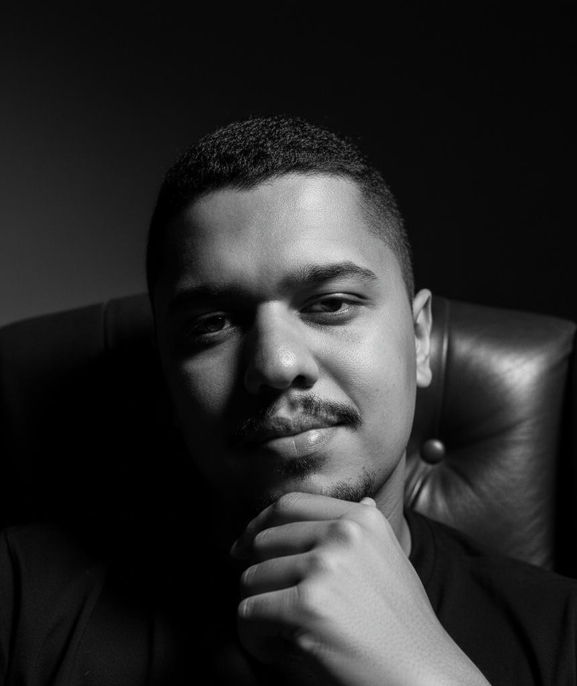

É UM PROCESSO TERAPÊUTICO FOCADO EM TRATAR A CAUSA DA ANSIEDADE, NÃO APENAS ALIVIAR SINTOMAS.
Através da regressão e atualização de memórias emocionais, identificamos e transformamos a raiz dos padrões que mantêm medo, insegurança e sensação de não pertencimento vivendo fora.
O objetivo é gerar mudanças reais na forma como você reage e vive essa fase no exterior.
Identificamos a origem emocional que sustenta a ansiedade. Não tratamos apenas o sintoma, mas o evento que condicionou sua resposta emocional.
Por meio de técnicas específicas, acessamos as memórias que ainda estão influenciando seu comportamento atual, mesmo em nível inconsciente.
A experiência é reorganizada no sistema nervoso. O cérebro deixa de reagir como se o passado ainda estivesse acontecendo.
O padrão emocional é encerrado. A resposta automática muda e isso se reflete nas decisões, nos relacionamentos e na forma como você vive.
Fase 1
Iniciamos com uma conversa estratégica e estruturada para identificar com clareza o que está sustentando sua ansiedade e seus padrões emocionais.
Investigamos as origens invisíveis do sintoma, acessando memórias e experiências que ainda influenciam suas reações no presente.
Fases 2 e 3
Estamos na etapa prática do processo. Trabalhamos diretamente nas memórias que mantêm o padrão ativo, promovendo a atualização emocional dessas experiências e reorganizando a resposta do sistema nervoso.
Não tratamos apenas um episódio isolado. Atuamos sobre todas as raízes que sustentam o ciclo, sejam conscientes ou não.
Importante: Cada pessoa possui uma história emocional única. Alguns processos evoluem de forma mais rápida, enquanto outros demandam um aprofundamento maior para que todas as raízes sejam tratadas com precisão. O foco não está no tempo, mas na consistência da mudança.
A CADA MEMÓRIA ATUALIZADA, O SINTOMA PERDE INTENSIDADE.
QUANDO A RAIZ É TRATADA POR COMPLETO, A FORMA COMO VOCÊ REAGE À VIDA MUDA DE MANEIRA SÓLIDA E DURADOURA.
Vive fora do Brasil e sente que a ansiedade aumentou depois da mudança
Conquistou a vida no exterior, mas por dentro ainda se sente insegura
Percebe que repete os mesmo padrões emocionais, mesmo tentando ser racional
Já faz terapia ou tentou resolver sozinha, mas sente que a raiz ainda não foi tratada
Quer entender a causa real da ansiedade e não apenas aprender a controlá-la
Busca segurança emocional para tomar decisões com mais confiança no país onde vive
Está cansada de analisar demais e quer acessar o que realmente está por trás da reação
Sente que tem um bloqueio interno travando sua vida profissional, afetiva ou financeira
Não quer apenas falar sobre a dor, mas resolver o que sustenta esse padrão

Especialista em Reestruturação Emocional e criador de um processo terapêutico focado no tratamento da raiz da ansiedade.
Ao longo da sua trajetória, Caike desenvolveu uma abordagem estruturada que vai além da conversa superficial. O foco do seu trabalho é identificar e atualizar as memórias que sustentam padrões emocionais repetitivos, insegurança e bloqueios internos.
Seu método é direcionado especialmente para mulheres brasileiras que vivem no exterior e perceberam que a mudança de país não resolveu o que sentem por dentro.
Em vez de trabalhar apenas o sintoma, Caike conduz um processo estratégico que reorganiza a resposta emocional na origem, permitindo que a transformação aconteça de forma consistente.
Hoje ele atende mulheres ao redor do mundo que buscam segurança emocional, clareza nas decisões e liberdade para viver com mais leveza no país que escolheram construir suas vidas.